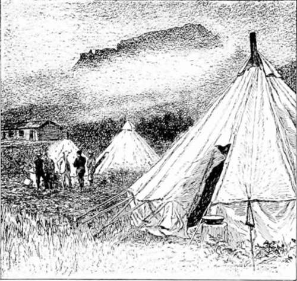

At Saint Mary's. Part 2
Description
This section is from the book "Hunting", by Archibald Rogers. Also available from Amazon: Hunting.
At Saint Mary's. Part 2
Ten minutes from the time of our entrance into the timber, we were lost; and from this time on, for the next hour and a half, it was a game of hide-and-go-seek between us and that "plain, blazed trail," and Hardeman and I were always "It."
But stumbling over the fallen trees, interlaced and crossed in inextricable confusion, winding in and out among the standing timber, getting a leg scraped here, a knee struck there, now leading our horses up a steep incline, now riding them with a delicious sense of rest over a level bit of trail for a few hundred yards —so we plodded along, and finally reached the upper timber-line, emerging from the gloom of the forest into the cheerful light of the open, and leaving very willingly behind us both our "plain, blazed trail" and the necessity for it.
But we had not reached the top of the mountain yet by any means; and the question now presented itself, —which direction to take. We had come out of the wood near the wedgelike end of Flat Top. Should we turn to our right, and pass around the jutting spur to the farther side of the mountain, or should we keep on the side where we were, and take our way to the left? Hardeman, who had with his Indian scouts done considerable mountain trailing in Arizona, and was just in his element now, proposed to do neither, but to climb straight to the top from where we were. Accordingly we dismounted, and then ensued the most difficult piece of infantry work I ever took part in. But we persevered, panting and struggling, slipping and recovering, but always going up. Our horses, led with long, loose rein, impeded us but little, picking their way along our foot-tracks with precaution and precision. They seemed to feel the effect of the rarefied air more than we; their breathing came short and quick. We were nearly seven thousand feet high.
We finally reached the top, only to find that the rocks made it impracticable for mounted work; so we tied our horses, wishing we had left them down at the timber-line.
A short rest, and we started afoot along the summit of the long mountain. Not knowing the habits of the game we were seeking, we had no definite idea as to the best method of hunting it. Well, we would just clamber along over these mountains, and trust to luck to fall in with something in the course of the day. The clouds were hanging low and thick; we were surrounded by them, in fact, and our field of vision was limited to a narrow circle.
An hour of this mountain travel, —down dale and up slope, through the long, wet grass, over the jagged rock and the treacherous shale, — an hour of this, and we were ready for a rest.
We sat down within the edge of a growth of pine on the side of a gentle slope of shale, which swept up to a long ridge a quarter of a mile away. As the clouds would occasionally rise above or drop below this ridge, it would stand for a few moments clearly outlined against the sky; and it was during one of these intervals that, in sweeping the ridge with my glass, I thought I saw a movement in an object which till then I had taken for a bush or a rock. Lowering my glasses, and resting my eyes a moment, I looked again. The object had disappeared.
A Temporary Camp.
It was a sheep. Without doubt it was a sheep. Our plans were soon formed. We would keep within the timber as long as possible, and moving well off to our left, approach them just below the line of the ridge, always keeping between their position and ours a clump of fir-brush which we could discern in the immediate vicinity of the spot where I had made the discovery.
We started at a rapid gait, all fatigue forgotten. We had not gone a hundred yards when we came upon the place where the band had slept the night before. Up to this time I think Hardeman had been rather sceptical as to whether I had really seen any game; but now his eye lighted up, as he realized that we were really in the immediate neighborhood of the game we sought.
The prettiest little beds imaginable these animals had made for themselves. Round, shallow basins were scooped out of the loose shale here and there; and so smooth they appeared, with the small, flat pieces of rock forming them, that they really gave one the idea of being soft.
My imagination depicted the sheep reaching this spot the evening before, an old ram in the lead. I saw them stop, and busy themselves in selecting and preparing their resting-places for the night. One by one they curled themselves in their cosey beds, made soft by their own thick coats of hair. What would I not give to have been there in person, to have watched and studied them in the morning, and —and —my mind suddenly dropping me down to earth — to know just where they were at this instant.
As we began to near the line of the ridge we recognized the necessity of extreme care in picking our way, lest the sound of our footfalls in the loose shale should be heard. We were making great efforts to tread noiselessly; and we were constantly reminded that our attempts were a signal failure by hearing the disturbed pieces of rock rolling from under our feet, down, down, hundreds of yards below. One of these little demons would start on its downward course, — the one of us that had started it always receiving a withering look from the other, — and, rolling at first slowly and smoothly, then bounding with a gentle tink-tinkle from one point to another, it would speed on, gathering impetus in its flight, and, like a bad boy on a lark, picking up many companions as it went, until finally the flight of this one little stone would become a mad rush of tumbling rock, and the pretty tinkling had increased to a roar, which to our oversensitive ears seemed loud enough to awaken the very mountains themselves.
Eventually the whole mass would find its resting-place in the valley below; and then we would cease grating our teeth in impotent rage, and creep on.
Continue to: